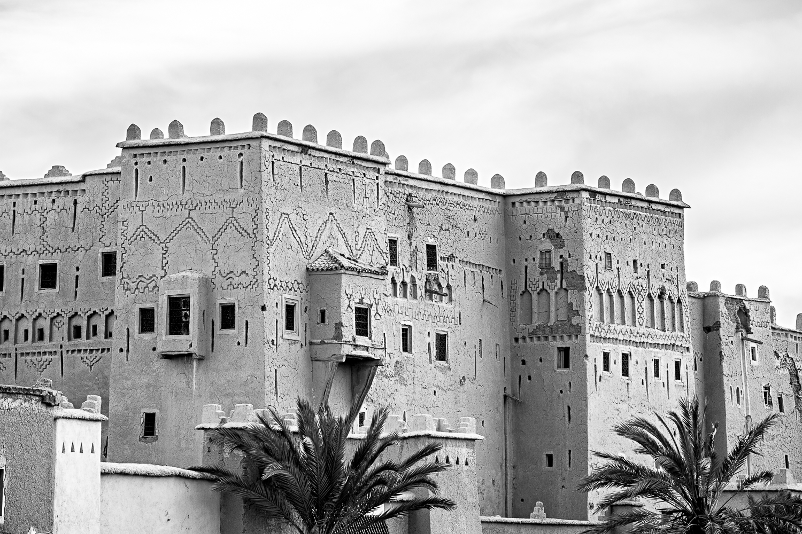
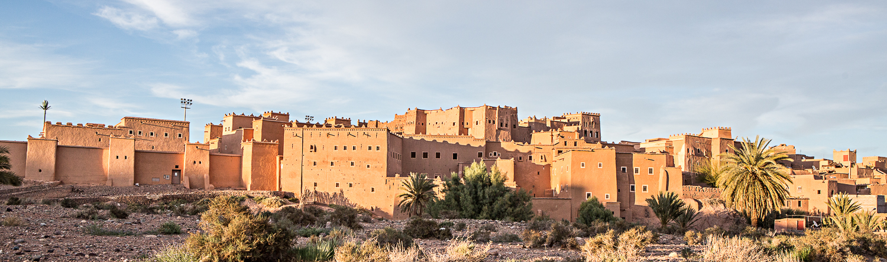
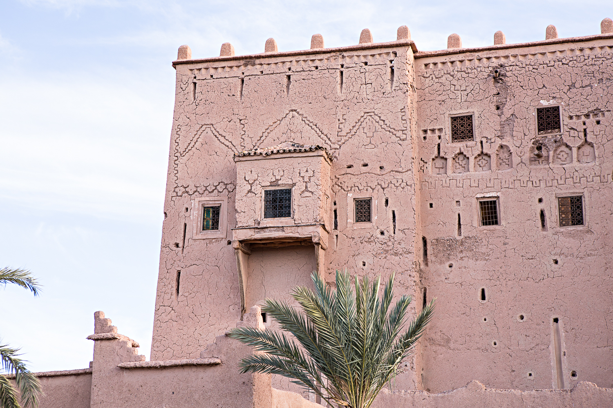

Il y a toujours un moment donné où le voyage ne se passe pas comme prévu, du moins tout commence à déraper sans que l’on ne comprenne bien pourquoi. C’est ce qui s’est passé après l’étape de Taghazout. Nous avions plusieurs options dont celle d’aller à Paradise Valley, s’arrêter à mi-chemin entre notre prochaine destination, prendre un peu plus notre temps quoi…Ou tout simplement tracer…

Et puis nous avions toujours en tête de passer une nuit dans le désert aux portes du Sahara et pour cela, il a fallu plus où moins commencer à planifier notre voyage. À partir de Taghazout, nous avons réservé au jour le jour nos nuits à l’hôtel et donc organisé ce séjour au compte goutte selon nos envies. Je ne sais pas si c’était la meilleure des idées. Nous avons fait quelques erreurs, mais tant pis, c’est ça aussi l’aventure !
De Taghazout à Ouarzazate nous avons donc beaucoup roulé, traversé des montagnes, des paysages désertiques, des vallées, des petits villages, des palmeraies, roulé de jour et de nuit et c’était tout simplement magnifique, bien plus que je ne l’aurai jamais imaginé.


Le Maroc, fait définitivement parti des plus beaux pays que j’aie pu voir. J’ai adoré ses paysages arides et ses routes désertiques. Nous sommes donc arrivés un peu au hasard dans la nuit près de Ouarzazate. Un tout petit village quasi au cœur des montages ocres.
Nous n’avions absolument rien réservé et avons atterri au hasard dans une magnifique Kasbah que nous avons pu découvrir au petit matin. Il faisait très froid, les routes avaient gelé, les montagnes étaient enneigées, quelques routes étaient bloquées. Nous avons été accueillis comme des rois, avec un bon gros festin et de la musique au tam-tam et guitare berbère jouée par nos hôtes. C’était une ambiance hors du temps, un moment assez unique dont j’en garde les meilleurs souvenirs. Nous avons dormi dans une chambre gelée, il n’y avait plus d’eau chaude à cause des tuyaux qui avaient sans doute gelé eux aussi, mais ça n’était pas grave. C’était tellement beau. J’imagine cette Kasbah avec sa belle piscine et son paysage unique en plein été et je ne peux que vous la conseiller.